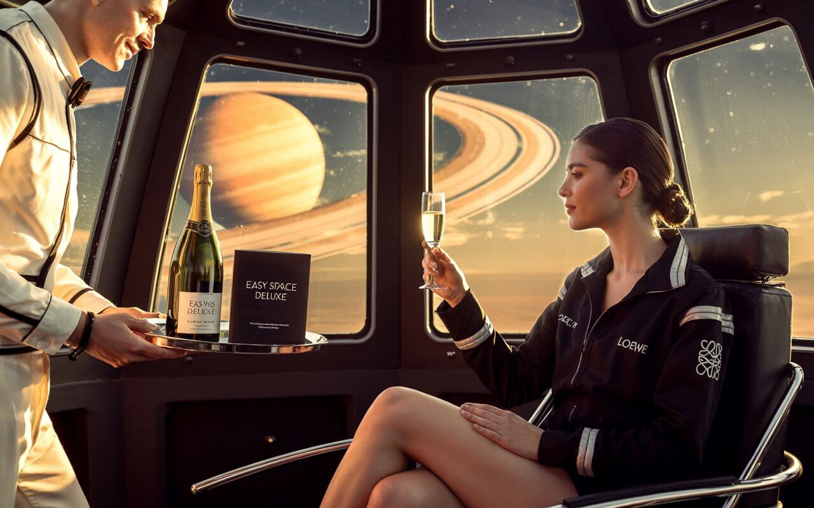

EASY SPACE TRAVEL. EXPERIENCIA PREMIUM DELUXE
En Easy Space, hemos redefinido el concepto de viajar al espacio. Con nuestra experiencia Premium Deluxe, cada detalle ha sido cuidadosamente diseñado para ofrecer una vivencia única, sofisticada y sin precedentes, pensada para quienes desean explorar el universo sin renunciar al lujo.
Durante años, la exploración espacial fue un privilegio limitado. Hoy, Easy Space te
invita a vivir un viaje transformador, combinando tecnología de vanguardia, diseño
sensorial y una atención personalizada de primer nivel. Desde el primer momento, te
sumerges en una atmósfera elegante, futurista y silenciosa, donde el confort es tan
importante como la aventura.
Nuestro servicio Premium Deluxe ofrece cápsulas individuales con butacas reclinables de gel ergonómico, ventanales panorámicos de 180 grados, sistema de gravedad adaptativa y servicio a bordo exclusivo. A tu llegada, un asistente personal te acompaña en cada paso, asegurando una experiencia fluida, segura y absolutamente inolvidable.

La experiencia comienza en tierra firme, en nuestros centros de embarque privados, con recepción VIP y ambientación sensorial. Un breve entrenamiento personalizado te prepara para disfrutar de la ingravidez sin preocupaciones. Y cuando por fin despegas, cada segundo se convierte en poesía visual: la Tierra azul a tus pies, el silencio absoluto del espacio, y tú flotando en un entorno cuidado hasta el más mínimo detalle.
Como parte del servicio Deluxe, disfrutarás de un menú gourmet diseñado por chefs galácticos, música personalizada según tus emociones, y un kit de relajación con aroma a lavanda espacial. Además, podrás capturar el momento con fotos y vídeos en 360 grados y recibir al final del viaje un dossier personalizado de tu experiencia
La experiencia Premium Deluxe no es solo un viaje. Es una transformación. Es ver el universo con nuevos ojos, es reconectar con lo esencial mientras te rodea lo extraordinario. Es sentir que, por un instante, todo gira alrededor de ti.
¿Te imaginas ver la Luna desde la ventanilla o flotar mientras observas las estrellas sin contaminación lumínica? Con Easy Space, el turismo espacial ya no es cosa del futuro: es presente, es real, y está al alcance de tu mano.
Bienvenido a la cima del turismo espacial. Porque viajar al espacio puede ser sublime, elegante… y profundamente humano.
Bienvenido a viajes Easy Space
Tu viaje a las estrellas comienza aquí.
Experiencia Premium Deluxe.
En Easy Space creemos que el lujo no debe limitarse a la Tierra. Por eso hemos diseñado nuestra experiencia Premium Deluxe, una travesía suborbital pensada para quienes buscan vivir el espacio con elegancia, sofisticación y atención a cada detalle. Todo está cuidadosamente seleccionado para ofrecer una experiencia inolvidable, cómoda, y llena de pequeños placeres más allá de la atmósfera..
- Menú gourmet “Deluxe Nebulosa” diseñado por chefs estelares
- Entrenamiento personalizado “Executive Astronaut Program” con asesor privado
- Asiento ergonómico reclinable con vista panorámica total a la Tierra
- Welcome Kit “Deluxe EasyCase” con amenities de alta gama
- Botella de agua cristalina ionizada con minerales galácticos
- Producción audiovisual 8K del viaje con edición cinematográfica
- Playlist exclusiva “Galactic Elegance & Cosmic Jazz”
- Conectividad satelital avanzada con acceso a la nube interestelar
- Pack de bienestar en vuelo: antifaz orbital, nebulizador de oxígeno y música binaural
Servicios incluidos en la clase Premium Deluxe:
- Simulador de gravedad cero privado con instructor personal
- Upgrade a cápsula individual con vistas 360º y domo translúcido
- Streaming en vivo del vuelo con traducción en tiempo real a múltiples idiomas
- Conexión de datos premium con videollamadas holográficas
- Souvenir interplanetario Easy Space (joya flotante, bata térmica y certificado conmemorativo)
- Chef de cápsula para menú “Stellar Gourmet Fusion” a bordo
- Wi-Fi cuántico ultrarrápido con IA personalizada
- Tratamiento de spa galáctico: máscara de plasma y masaje antigravedad
- Pack Selfie Deluxe (dron de vuelo interior + edición profesional de fotos)
- Champán estelar añejo “Easy Grand Cuvée Zero-G” servido en copa imantada
- Sesión privada de observación astronómica con guía experto en astrofísica